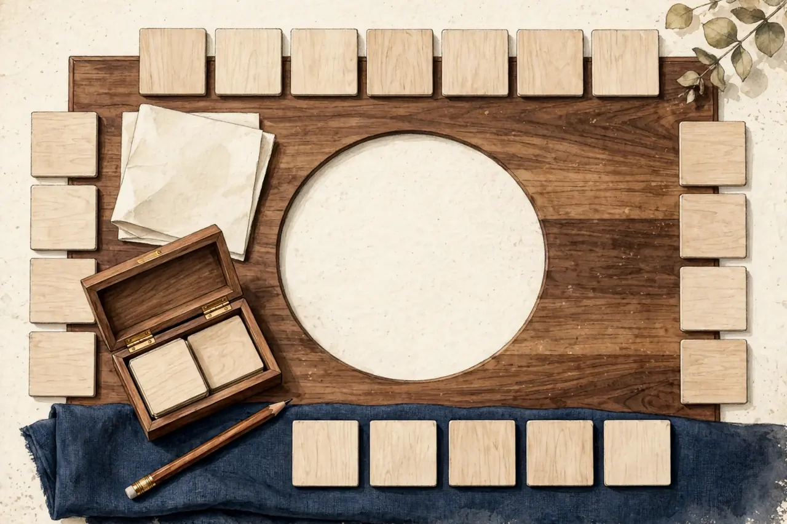

Play a rhythm, not a health promise
A few notes can make a simple game feel like music. You might copy a pattern, change one beat or make a short phrase of your own. Enjoyment is a good reason to try it. A health claim needs a different kind of evidence.
Instrument lessons are not a browser game
A 2024 systematic review and meta-analysis examined musical-instrument training in healthy older adults who were new to making music. It combined 13 studies with 502 participants. The review found benefits on some measures, including inhibition, switching and processing speed. It did not find effects on selective visual attention, working memory or verbal memory. [1]
Study quality also matters. Three studies were rated at high risk of bias, nine had some concerns and one was rated low risk. We reviewed the publisher's abstract and study summary, not the complete article. These findings are encouraging for further research, but they do not show that every music activity improves cognition. [1]
Instrument learning involves physical actions, instruction and practice over time. Listening to a tune, copying a rhythm on a screen and learning an instrument are different activities. BrainPlay should not present them as interchangeable or call a music game "music therapy."
Make room for different ways to play
A rhythm game could let you hear a short pattern, watch its visual equivalent and repeat it at your chosen pace. A replay button can be part of the game rather than a mistake. Silent mode should remain a complete experience, with shapes or numbered pads carrying the pattern.
If timing is optional, you can concentrate on the order of the beats instead of tapping quickly. Choose a comfortable volume. You can stop whenever the activity stops being enjoyable.
These are proposed game features, not the programme tested in the review. They would need ordinary usability testing, including with people who prefer no sound.
The bottom line: Music can give a game an appealing form. Research on instrument training does not establish that a short rhythm game improves memory, provides therapy or prevents dementia.
Sources
- Rogers F, Metzler-Baddeley C. The effects of musical instrument training on fluid intelligence and executive functions in healthy older adults: A systematic review and meta-analysis. Brain and Cognition, 2024. Publisher abstract and summary reviewed. https://www.sciencedirect.com/science/article/pii/S0278262624000149
← Back to the games · All articles · About · Privacy policy · Photo credits · Cookie settings